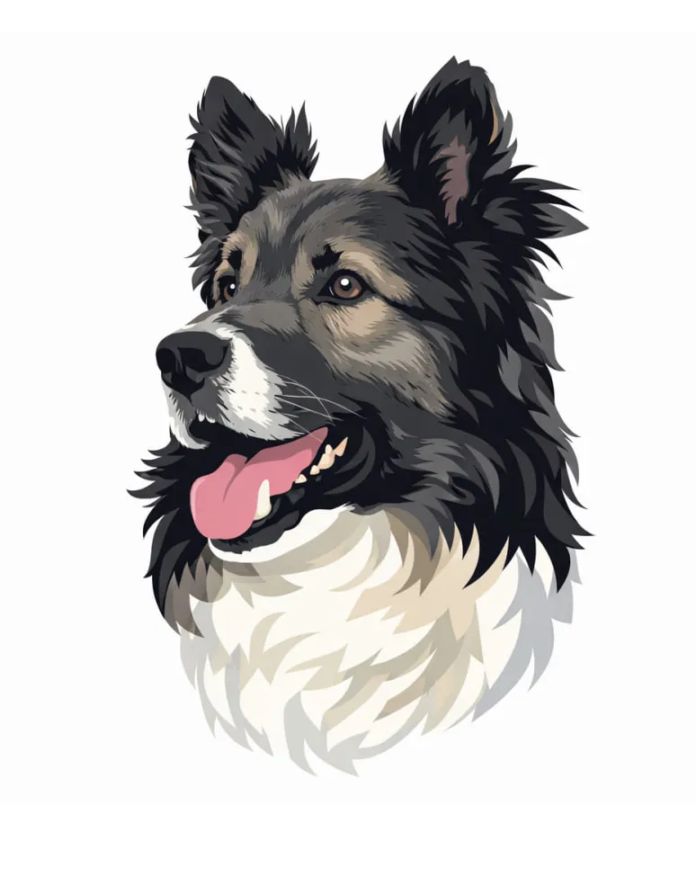

About Richard<CORE>
Richard<CORE> is an independent development studio focused on practical software and digital tools. The project develops browser-based applications, desktop software and technical solutions designed with clarity, performance and usability in mind.
Instead of building one large platform, Richard<CORE> is a collection of focused tools. Each application is created to solve a specific problem while remaining lightweight, reliable and easy to use.
Philosophy
Every project begins with a simple idea: build tools that help people focus on their work. Clean interfaces, predictable behavior and long-term maintainability are valued over unnecessary complexity and feature overload.
In Memory of Richard
Richard<CORE> is named in memory of Richard (/ˈrɪxɑːrt/).
He was more than a pet — he was a loyal companion whose presence left a lasting mark on my life. Giving this project his name is my way of keeping that memory alive.
